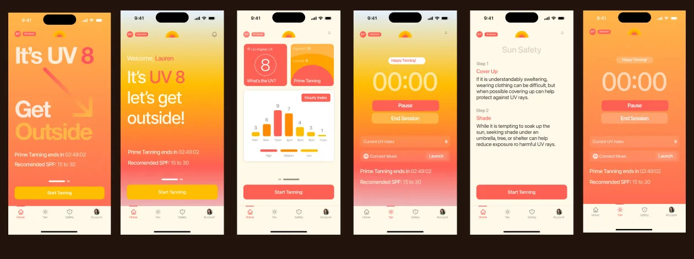

Rays. Tanning, without the guesswork.
CatchRays is a brand built around a community of people who love summer, the beach and a good tan. They wanted an iPhone app because nothing on the market gave tanners what they needed: accurate UV tracking and a safer way to tan, in one place.
Took the founders’ idea from zero to one as the only designer: research and usability testing with users they’d already gathered, product strategy, end-to-end product and interaction design, and the website, designed and built to launch the app.
- Role
- Product Designer
- Built With
- Figma, Swift, Xcode, React Native, Supabase, Git
- Worked With
- CatchRays Founders
- Project
- iPhone App, Website
- Year
- 2022–2023
- of testers avoided sunburn
- 86%
- tanned successfully for their skin type
- 78%
- joined the waitlist before launch
- 2,000+
- people in usability testing
- 20+
The Problem
Tanners struggle to balance the tan they want with keeping their skin healthy. Existing apps lacked real-time UV data and personal safety guidance, so people didn’t know their limits. To get it right, they had to search online for the UV index, sun safety advice, the best times to be out and the right SPF.
What We Learned, and What We Set Out To Do
Research came back with three findings, and each one became an objective.
-
FindingNo real-time UV monitoring, and no clear way to read the data.
ObjectiveA friendly, real-time UV index and exposure chart.
-
FindingA big worry about skin safety and getting burnt.
ObjectiveSafety guidance personalized to each person’s skin.
-
FindingTired of juggling a stack of bookmarked sites.
ObjectiveAn app that gets every task done quickly and easily.
Two Versions
The first version covered everything, and testing said it was too much: cluttered, too colorful, with analytics that were hard to read and the timer, the reason people came, buried. Three questions shaped the second version: How do we make the tanning timer better? How do we simplify the experience? How do we show the numbers that matter right away?

From v1 to the final app
What Testing Said
- Cluttered, and too colorful.
- The analytics were poorly displayed.
- The timer needed to come first.
What Changed
- Today’s UV, temperature and prime tanning hours up top.
- One hourly chart instead of many widgets.
- Start Tanning one tap away, on every screen.
Today, at a Glance
The app opens on what a tanner needs to decide: today’s UV index, the temperature outside and the prime tanning hours, with an hourly UV chart underneath. Each hour fills to its UV index and warms in color as it rises, so a glance says when to go out and when to cover up.
Hourly UV Index
A Timer That Looks After You
The timer became the center of the app. A session takes three steps: set a duration, choose how to be reminded, including a nudge to flip, and start. Then the screen changes to a countdown with music one tap away.
Set tanning duration
Set notifications
Happy
Tanning!
00:30:00
Time to flip ☀️
The Website
The site introduces the app and carries the brand into the shop: what Rays does, the features that matter most, and CatchRays’ summer essentials one tap from the store. It was designed and built alongside the app, so the launch felt like one thing.
Decisions
- The timer first. Testing showed people opened the app to tan, not to read data, so the timer moved to the center and every screen keeps Start Tanning one tap away. The analytics got less room in exchange, which is what testers asked for.
- One chart instead of many. v1 had widgets for everything. The final app reduces it to a single hourly chart that fills and warms with the UV. Less to explore, and an answer at a glance.
- Warm, but calmer. v1 was too colorful. The final palette keeps the brand’s sun-warm oranges for what matters and lets everything else step back.
- Reminders do the remembering. Push notifications say when to flip and when to stop, so nobody has to watch the clock.
Usability Testing and Brand Impact
In usability testing with more than 20 people, the app helped 86% of them avoid sunburn, and 78% tanned successfully by following the guidance for their skin type. Before launch, more than 2,000 people joined the waitlist, and the CatchRays online store sold out of every product in its first month.
- CatchRays is extremely intuitive and fast to use.
- I wish I had this for my trip to Aruba.
- I feel like I am tanning with an assistant.
- Knowing when to go tan is extremely useful.
- The push notifications are very helpful.
- The app is simple and easy to navigate.
- Not being sunburnt feels great.
- This has not only saved me time but also a lot of aloe, lotion, oil, and money.
- The hourly data is such a relief.